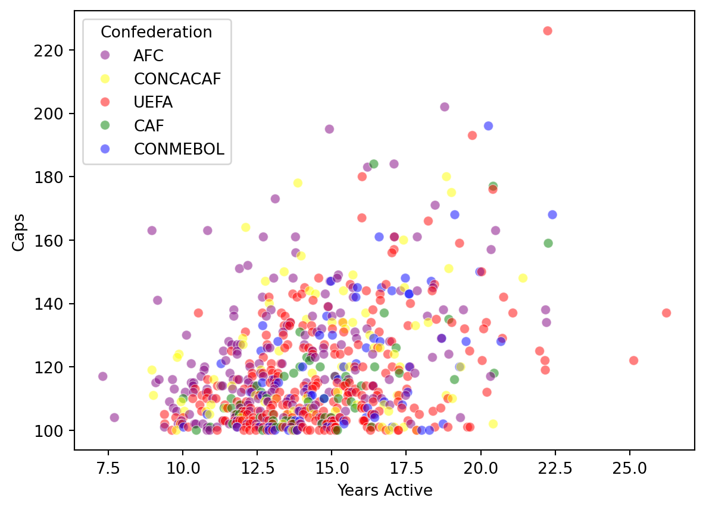

Code
import requests
import re
import pandas as pd
import numpy as np
import seaborn as snsFIFA typically awards caps to footballers in internationsal football who make an official appearance for their national team. In this blog we will be looking through a dataset containing all mens footballers who have earned 100 or more international caps. I will try to see if other variables, like years active and confederations correlate with the caps.
We will look to see if there is correlation between any of the variable like confederation and years active in the dataset to try to predict the amount of caps a player will have.
The Wikipedia Creative Commons Deed states that we are free to share and adapt material for any purpose even commercially under the terms that we give appropriate credit in a reasonable manner, distribute our contributions under the same license as the original, and do not apply any additional restrictions that legally restrict others from doing anything the license permits.
You can follow along with the sam website and table or find a different link to follow along with. I recommend following along wiht my link first them going over the steps again with your own link.
To get started we first need to download all of the packages we will be using into our environment
After downloading the packages we need to load the table into python. First create a header like this:
It is important to header, because many websites, including wikipedia, will block, redirect or return an incomplete HTML, because they assume you are a bot. By adding your own User-Agent, You look like a real person requesting information with a purpose.
The next step is to scrape the data from wikipedia using requests. If you are using your own url just insert it over mine.
to read the tables from html into python we will use read_html(). If the website has multiple tables. all of them will be returned with read_html in a list. it should be the ith table down on the website. In my example the table I used was the second one on the website.
C:\Users\Admin\AppData\Local\Temp\ipykernel_22472\760241854.py:1: FutureWarning: Passing literal html to 'read_html' is deprecated and will be removed in a future version. To read from a literal string, wrap it in a 'StringIO' object.
tables = pd.read_html(r.text)to ensure that you correctly grabbed the right table look at the head
| Rank | Players | Nation | Confederation | Caps | Debut | Latest | |
|---|---|---|---|---|---|---|---|
| 0 | 1 | Cristiano Ronaldo | Portugal | UEFA | 226.0 | 20 August 2003 | 13 November 2025 |
| 1 | 2 | Bader Al-Mutawa | Kuwait | AFC | 202.0 | 4 September 2003 | 14 June 2022 |
| 2 | 3 | Lionel Messi | Argentina | CONMEBOL | 196.0 | 17 August 2005 | 14 November 2025 |
| 3 | 4 | Soh Chin Ann[a] | Malaysia | AFC | 195.0 | 19 November 1969 | 18 October 1984 |
| 4 | 5 | Luka Modrić | Croatia | UEFA | 193.0 | 1 March 2006 | 14 November 2025 |
If you are using your own website you will not want to follow my steps exactly as cleaning datasets depend on the dataset.
To clean up the dataset we will first replace the brackets at the end of a few of the players names using regex, drop the two australia players, because they are a part of two confederations, and we will want to drop all of the na values. You will do something similar with your dataset just more fitting for what your dataset needs fixed
For my dataset I added a few columns and dropped unneeded columns to make analyzing/visualizing my dataset easier. You can do something similar with yours or if you already have the columns you need maybe you should look into a new dataset to practice your skills.
df['Debut'] = pd.to_datetime(df['Debut'], errors='coerce')
df['Latest'] = pd.to_datetime(df['Latest'], errors='coerce')
df["Years Active"] = round(((df['Latest'] - df['Debut']).dt.days / 365), 2)
df['Caps Per Year'] = round((df['Caps'] / df['Years Active']), 2)
df = df.sort_values(by=['Caps Per Year', 'Caps'], ascending=False).reset_index(drop=True)
df = df[['Players','Nation', 'Confederation', 'Caps', 'Years Active', 'Caps Per Year']]Use .head() to make sure everything is looking good!
Now that our data is cleaned and organized, we can start exploring it to better understand whether we can use this dataset to predict the caps of a player
first we can look at some basic summary statistics to see thing like how many obsevations we have, how sprea out the values are and what the typical player in the dataset looks like
0.3615047149142935from these we can see that the means of caps from each of the confederations are really similar and that there is a very slight correlation between the years a player is active and the amount of caps they earn.
We can also visualize the data to see if we can find any other patterns:

looking at the graph there does not appear to be any patterns or correlations between the variables. We can conclude that we cannot use the amount of years a player is active or the confederation that player is a part of to predict caps
link to my github code click here
link to the wikipedia article with the table click here
---
title: "Footballers and Caps"
format: html
jupyter: python3
---
# Introduction
FIFA typically awards caps to footballers in internationsal football who make an official appearance for their national team. In this blog we will be looking through a dataset containing all mens footballers who have earned 100 or more international caps. I will try to see if other variables, like years active and confederations correlate with the caps.
## Can We Predict a Football Players Caps?
We will look to see if there is correlation between any of the variable like confederation and years active in the dataset to try to predict the amount of caps a player will have.
## Ethics
The [Wikipedia Creative Commons Deed](https://en.wikipedia.org/wiki/Wikipedia:Text_of_the_Creative_Commons_Attribution-ShareAlike_4.0_International_License) states that we are free to share and adapt material for any purpose even commercially under the terms that we give appropriate credit in a reasonable manner, distribute our contributions under the same license as the original, and do not apply any additional restrictions that legally restrict others from doing anything the license permits.
# How To
You can follow along with the sam website and table or find a different link to follow along with. I recommend following along wiht my link first them going over the steps again with your own link.
## Getting Started
To get started we first need to download all of the packages we will be using into our environment
```{python}
import requests
import re
import pandas as pd
import numpy as np
import seaborn as sns
```
After downloading the packages we need to load the table into python. First create a header like this:
```{python}
headers = {'User-Agent': 'Insert Reason'}
```
It is important to header, because many websites, including wikipedia, will block, redirect or return an incomplete HTML, because they assume you are a bot. By adding your own User-Agent, You look like a real person requesting information with a purpose.
The next step is to scrape the data from wikipedia using requests. If you are using your own url just insert it over mine.
```{python}
url = "https://en.wikipedia.org/wiki/List_of_men%27s_footballers_with_100_or_more_international_caps"
r = requests.get(url, headers=headers)
```
to read the tables from html into python we will use read_html(). If the website has multiple tables. all of them will be returned with read_html in a list. it should be the ith table down on the website. In my example the table I used was the second one on the website.
```{python}
tables = pd.read_html(r.text)
df = tables[1]
```
to ensure that you correctly grabbed the right table look at the head
```{python}
df.head()
```
## Cleaning it up
If you are using your own website you will not want to follow my steps exactly as cleaning datasets depend on the dataset.
To clean up the dataset we will first replace the brackets at the end of a few of the players names using regex, drop the two australia players, because they are a part of two confederations, and we will want to drop all of the na values. You will do something similar with your dataset just more fitting for what your dataset needs fixed
```{python}
df['Players'] = df['Players'].str.replace(r'\[([a-z]+)\]', '', regex=True)
df = df[df['Confederation'] != 'OFC / AFC[1]']
df = df.dropna()
```
For my dataset I added a few columns and dropped unneeded columns to make analyzing/visualizing my dataset easier. You can do something similar with yours or if you already have the columns you need maybe you should look into a new dataset to practice your skills.
```{python}
df['Debut'] = pd.to_datetime(df['Debut'], errors='coerce')
df['Latest'] = pd.to_datetime(df['Latest'], errors='coerce')
df["Years Active"] = round(((df['Latest'] - df['Debut']).dt.days / 365), 2)
df['Caps Per Year'] = round((df['Caps'] / df['Years Active']), 2)
df = df.sort_values(by=['Caps Per Year', 'Caps'], ascending=False).reset_index(drop=True)
df = df[['Players','Nation', 'Confederation', 'Caps', 'Years Active', 'Caps Per Year']]
```
Use .head() to make sure everything is looking good!
## EDA Highlights
Now that our data is cleaned and organized, we can start exploring it to better understand whether we can use this dataset to predict the caps of a player
first we can look at some basic summary statistics to see thing like how many obsevations we have, how sprea out the values are and what the typical player in the dataset looks like
```{python}
df.describe()
df.groupby('Confederation')["Caps"].mean()
print(np.corrcoef(df['Years Active'], df['Caps'])[0,1])
```
from these we can see that the means of caps from each of the confederations are really similar and that there is a very slight correlation between the years a player is active and the amount of caps they earn.
We can also visualize the data to see if we can find any other patterns:
```{python}
color = {'UEFA' : 'red', 'AFC' : 'purple', 'CONCACAF' : 'yellow', 'CONMEBOL' : 'blue', 'CAF' : 'green'}
sns.scatterplot(x = 'Years Active', y = 'Caps', data = df, hue = 'Confederation', palette = color, alpha = 0.5)
```
looking at the graph there does not appear to be any patterns or correlations between the variables. We can conclude that we cannot use the amount of years a player is active or the confederation that player is a part of to predict caps
### other links
link to my github code click [here](https://github.com/lmcnary/data_acquisition_blog.git)
link to the wikipedia article with the table click [here](https://en.wikipedia.org/wiki/List_of_men%27s_footballers_with_100_or_more_international_caps)